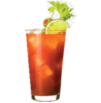

Well, it's a Bloody Mary morning, Baby left me without warning.- Willie Nelson
In 1921 Fernand Petiot, a bartender at the New York Bar later to be Harrys New York Bar, claimed to have invented the Bloody Mary.
The cocktail is even thought to be invented by comedian George Jessel who frequented Club 21. There is historical proof that Jessel coined the name, in 1939 an article was published that stated the Bloody Mary is made with 1:1 tomato Juice and vodka.
Depending on which biography or interview you wish to believe, the name comes from a Newspaper tycoons daughter, as suggested by Jessel, or a patrons girlfriend according to Petiot. Contributing factors could be Queen Mary I of England who was referred to as 'Bloody Mary'.
In 1946 a Bloody mary was published in a cocktail book for the first time. In 1964 Petiot acknowledged that Jessels was the first to mix vodka and tomato juice, but claimed that he improved on the cocktail.
The Bloody Mary is referred to as the 'Hair of the dog.' It based is vodka and tomato juice. Variations of the above recipe might include lime juice, tomatoes, celery salt, horse raddish, chilli, bitters, oysters, bacon and prawns, to name a few. These ingredients can be used where applicable, in the methods as a garnish or to spice up the ingredients.